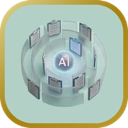

Digital Change Advisors ha identificado siete. No son categorías de industria ni niveles de madurez tecnológica: son configuraciones organizacionales que producen el mismo resultado por caminos distintos. Reconocer cuál opera en una empresa determina qué intervención tiene sentido, porque cada uno tiene una causa raíz diferente y responde a una palanca diferente.
Barco sin Timón
Hay presupuesto, hay talento y hay tecnología. Lo que no hay es una dirección que los integre. Cada iniciativa avanza por su cuenta hacia un destino que nadie declaró, y la suma de decisiones locales razonables produce un conjunto que no lleva a ninguna parte.
Feudos Digitales
Cada área construye su propio castillo de inteligencia artificial y defiende su territorio de las demás. La organización termina financiando varias veces la misma capacidad, sin que ninguna alcance la escala que justificaría la inversión.

Trampa Burocrática
El discurso declara acceso universal a la inteligencia artificial. La práctica impone un laberinto para poder usarla. El resultado no es que la gente no quiera adoptarla: es que el costo de intentarlo supera el beneficio de lograrlo, y el equipo lo calcula rápido.
Teatro de Entrenamiento
Se invierte de forma significativa en capacitación y el comportamiento en el flujo diario de trabajo no cambia. Los indicadores de formación se cumplen —asistencia, certificados, satisfacción— mientras el indicador de negocio permanece inmóvil. Se está midiendo la actividad equivocada.
Síndrome del Paralítico
La estrategia es clara, el liderazgo está presente y la tecnología está disponible. Y aun así la organización no se mueve. El obstáculo no está en ninguno de los insumos visibles, sino en creencias y dinámicas internas que nadie ha nombrado y que, por eso mismo, nadie está interviniendo.
Amenaza de Tormenta
Hay crisis de rentabilización ya activas y otras en desarrollo. La ventana para prevenir el daño mayor sigue abierta, pero se está cerrando. Es el estado en el que una intervención temprana todavía cuesta una fracción de lo que costará la corrección posterior.
Tormenta Perfecta
Cuatro o más obstáculos críticos operando de forma simultánea, en ciclos que se refuerzan mutuamente. Cada uno agrava a los demás, de modo que resolverlos por separado no funciona: el sistema los regenera. Es el patrón que exige intervención sobre la configuración completa y no sobre sus partes.
Cómo saber cuál opera en tu organización
El AI Return Test identifica el arquetipo que corresponde a una empresa a partir de la lectura de sus obstáculos de rentabilización. Toma veinticinco minutos y entrega el Índice de Urgencia Global, el mapa de obstáculos y el arquetipo.
Cuando el diagnóstico debe integrar la mirada de varios líderes y no la de una sola persona, el AI Return Assessment recoge la lectura de hasta veinte directivos de la organización y produce el cuadro agregado.